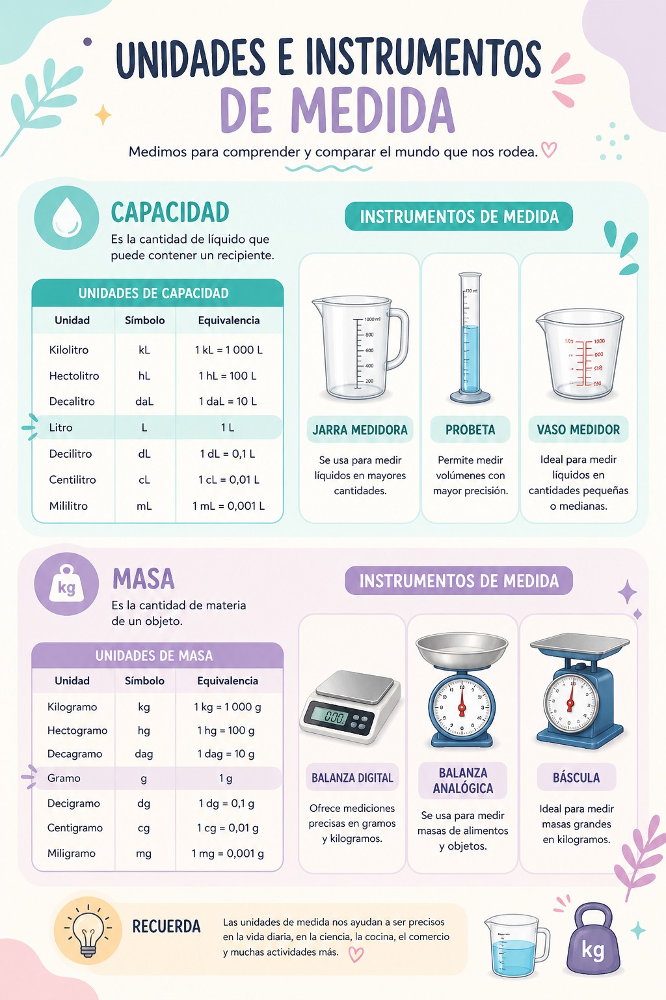
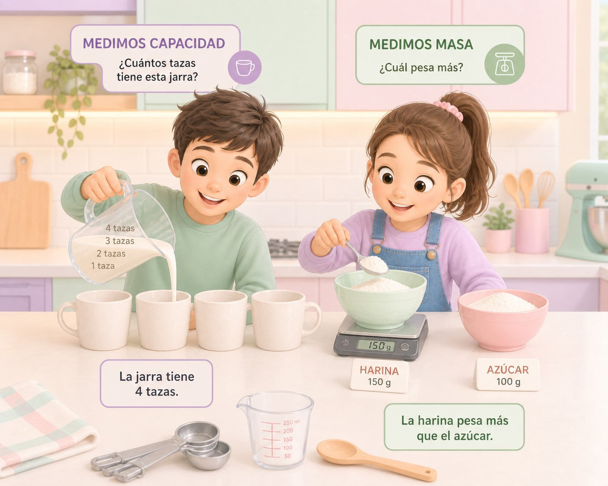

Con este cartel podrás conocer la descripción del proyecto.

Imagen creada por la autora con DALL-E 3
Texto
¡Exploremos el mundo de la capacidad y la masa!

Imagen creada por la autora con DALL·E 3
Con esta presentación y estos vídeos(uno y dos) repasarás las unidades de medida de capacidad y masa con el objetivo de aprender a medir, convertir y utilizar correctamente las unidades de masa y capacidad en situaciones reales. Además se realizarán actividades, resolución de problemas y tareas que requieran la utilización de instrumentos de medida cotidianos.
Presentación creada por la autora con PowerPoint
Te invitamos a reflexionar y compartir con tus compañeros:
- Las magnitudes y las unidades de medida de capacidad y masa (múltiplos y submúltiplos). Las unidades principales de medida: capacidad (litro) y masa (gramo).
- Las conversiones entre unidades de capacidad y masa (por ejemplo, de litros a mililitros o de kg a g).
- Comparaciones, estimaciones y medidas de cantidades usando las unidades adecuadas en diferentes situaciones.
- Resolución de problemas prácticos relacionados capacidad y masa en contextos reales.
- Utilización de instrumentos de medida (como balanza o recipientes graduados) correctamente.
- Reflexión sobre el uso de unidades e instrumentos de medida en la vida cotidiana.
Estas ideas servirán como punto de partida para trabajar en grupo y generar un debate enriquecedor. Al compartir nuestras respuestas, aprenderemos juntos sobre el uso de las unidades de capacidad y masa, así como la importancia de los instrumentos de medida en la vida diaria. Además, podremos reflexionar sobre cómo aplicarlos correctamente en distintas situaciones.
¡Participar te ayudará a conocer más y aportar tus propias ideas al grupo!